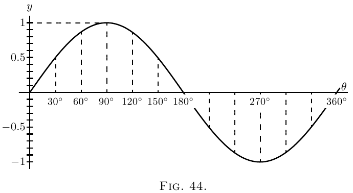

Isso apaga tudo que foi salvo neste navegador: destaques, notas, preferências (fonte, tema, tamanho), cor do marca-texto e qualquer outro dado local do site.
Esta ação não pode ser desfeita.
Sendo usual as letras gregas denotarem ângulos, tomaremos como letra usual para qualquer ângulo variável a letra $\theta$ (“teta”).
Consideremos a função
\[ y= \sin \theta. \]
O que temos de investigar é o valor de $\dfrac{d(\sin \theta)}{d \theta}$; ou, em outras palavras, se o ângulo $\theta$ varia, temos de achar a relação entre o incremento do seno e o incremento do ângulo, ambos os incrementos sendo indefinidamente pequenos em si mesmos. Examine a Figura 43, em que, se o raio do círculo for a unidade, a altura de $y$ é o seno, e $\theta$ é o ângulo. Ora, se $\theta$ for suposto aumentar pela adição a ele do pequeno ângulo $d \theta$ - um elemento de ângulo - a altura de $y$, o seno, será aumentada por um pequeno elemento $dy$. A nova altura $y + dy$ será o seno do novo ângulo $\theta + d \theta$, ou, enunciando como equação, \[ y+dy = \sin(\theta + d \theta); \] e subtraindo desta a primeira equação dá \[ dy = \sin(\theta + d \theta)- \sin \theta. \]
A quantidade no lado direito é a diferença entre dois senos, e os livros de trigonometria nos dizem como calcular isto. Pois eles nos dizem que se $M$ e $N$ forem dois ângulos diferentes,
\[ \sin M - \sin N = 2 \cos\frac{M+N}{2}·\sin\frac{M-N}{2}. \]Se, então, pusermos $M= \theta + d \theta$ para um ângulo, e $N= \theta$ para o outro, podemos escrever
\begin{align*}dy &= 2 \cos\frac{\theta + d\theta + \theta}{2} · \sin\frac{\theta + d\theta - \theta}{2},\\ \text{ou,}\; dy &= 2\cos(\theta + \tfrac{1}{2}d\theta) · \sin\tfrac{1}{2} d\theta. \end{align*}Mas se considerarmos $d \theta$ como indefinidamente pequeno, então no limite podemos desprezar $\frac{1}{2} d \theta$ por comparação com $\theta$, e também tomar $\sin\frac{1}{2} d \theta$ como sendo o mesmo que $\frac{1}{2} d \theta$. A equação então se torna: \begin{align*}dy &= 2 \cos \theta × \tfrac{1}{2} d \theta; \\ dy &= \cos \theta · d \theta, \\ \text{ e, finalmente,}\; \dfrac{dy}{d \theta} &= \cos \theta. \end{align*}
As curvas acompanhantes, Fig. 44 e Fig. 45 mostram,
plotadas em escala, os valores de $y=\sin \theta$, e $\dfrac{dy}{d\theta}=\cos\theta$,
para os valores correspondentes de $\theta$.
 Seja $y=\cos \theta$.
Ora $\cos \theta=\sin\left(\dfrac{\pi}{2}-\theta\right)$.
Portanto Por último, tome a tangente.
Seja Ora lembre-se de que se $d\theta$ for indefinidamente diminuído,
o valor de $\tan d\theta$ se torna idêntico a $d\theta$, e
$\tan\theta · d\theta$ é negligenciavelmente pequeno comparado com $1$, de modo que
a expressão se reduz a Reunindo estes resultados, temos:

| $y$ | $\dfrac{dy}{d\theta}$ |
|---|---|
| $\sin\theta$ | $\cos\theta$ |
| $\cos\theta$ | $-\sin\theta$ |
| $\tan\theta$ | $\sec^2\theta$ |
Às vezes, em questões mecânicas e físicas, como, por exemplo, no movimento harmônico simples e em movimentos ondulatórios, temos de lidar com ângulos que aumentam em proporção ao tempo. Assim, se $T$ for o tempo de um período completo, ou movimento em torno do círculo, então, como o ângulo em torno do círculo todo é $2\pi$ radianos, ou $360°$, a quantidade de ângulo percorrida no tempo $t$, será \begin{align*}\theta &= 2\pi\frac{t}{T},\quad \text{em radianos,} \\ \text{ou}\; \theta &= 360\frac{t}{T},\quad \text{em graus.} \end{align*}
Se a frequência, ou número de períodos por segundo, for denotada por $n$, então $n = \dfrac{1}{T}$, e podemos então escrever: \[ \theta=2\pi nt. \] Então teremos \[ y = \sin 2\pi nt. \]
Se, agora, quisermos saber como o seno varia em relação ao tempo, devemos diferenciar em relação, não a $\theta$, mas a $t$. Para isto devemos recorrer ao artifício explicado no Capítulo IX., e por \[ \frac{dy}{dt} = \frac{dy}{d\theta} · \frac{d\theta}{dt}. \]
Ora $\dfrac{d\theta}{dt}$ será obviamente $2\pi n$; de modo que
\begin{align*}\frac{dy}{dt} &= \cos \theta × 2\pi n \\ &= 2\pi n · \cos 2\pi nt. \end{align*} De modo semelhante, segue-se que \begin{align*}\frac{d(\cos 2\pi nt)}{dt} &= -2\pi n · \sin 2\pi nt. \end{align*}
Vimos que quando $\sin \theta$ é diferenciado em relação a $\theta$ ele se torna $\cos \theta$; e que quando $\cos \theta$ é diferenciado em relação a $\theta$ ele se torna $-\sin \theta$; ou, em símbolos,
\[ \frac{d^2(\sin \theta)}{d\theta^2} = -\sin \theta. \]Assim temos este resultado curioso de que encontramos uma função tal que se a diferenciarmos duas vezes, obtemos a mesma coisa de que partimos, mas com o sinal mudado de $+$ para $-$.
A mesma coisa é verdadeira para o cosseno; pois diferenciar $\cos\theta$ nos dá $-\sin\theta$, e diferenciar $-\sin\theta$ nos dá $-\cos\theta$; ou assim:
\[ \frac{d^2(\cos\theta)}{d\theta^2} = -\cos\theta. \]Senos e cossenos são as únicas funções das quais o segundo coeficiente diferencial é igual (e de sinal oposto) à função original.
Exemplos Com o que aprendemos até agora podemos agora diferenciar expressões de natureza mais complexa.
(1) $y=\arcsin x$.
Se $y$ for o arco cujo seno é $x$, então $x = \sin y$.
\[ \frac{dx}{dy}=\cos y. \]Passando agora da função inversa para a original, obtemos
\begin{align*}\frac{dy}{dx} &= \frac{1}{\;\dfrac{dx}{dy}\;} = \frac{1}{\cos y}. \\ \text{Ora}\; \cos y &= \sqrt{1-\sin^2 y}=\sqrt{1-x^2}; \\ \text{logo}\; \frac{dy}{dx} &= \frac{1}{\sqrt{1-x^2}}, \end{align*} um resultado um tanto inesperado.(2) $y=\cos^3 \theta$.
Isto é a mesma coisa que $y=(\cos \theta)^3$.
Seja $\cos\theta=v$; então $y=v^3$; $\dfrac{dy}{dv}=3v^2$.
\begin{align*}\frac{dv}{d\theta} &= -\sin\theta.\\ \frac{dy}{d\theta} &= \frac{dy}{dv} × \frac{dv}{d\theta} &= -3 \cos^2 \theta \sin\theta. \end{align*}(3) $y=\sin(x+a)$.
Seja $x+a=v$; então $y=\sin v$.
\[ \frac{dy}{dv}=\cos v;\qquad \frac{dv}{dx}=1 \quad\text{e}\quad \frac{dy}{dx}=\cos(x+a). \](4) $y=\log_\epsilon \sin \theta$.
Seja $\sin\theta=v$; $y=\log_\epsilon v$.
\begin{align*}\frac{dy}{dv} &= \frac{1}{v} \\ \frac{dv}{d\theta}&=\cos\theta;\\ \frac{dy}{d\theta} &= \frac{1}{\sin\theta} × \cos\theta = \cot\theta. \end{align*}(5) $y=\cot\theta=\dfrac{\cos\theta}{\sin\theta}$.
\begin{align*}\frac{dy}{d\theta} &= \frac{-\sin^2\theta - \cos^2 \theta}{\sin^2 \theta}\\ &= -(1+\cot^2 \theta) = -\text{cosec}^2 \theta. \end{align*}(6) $y=\tan 3\theta$.
Seja $3\theta=v$; $y=\tan v$; $\dfrac{dy}{dv}=\sec^2 v$.
\[ \frac{dv}{d\theta}=3;\quad \frac{dy}{d\theta}=3 \sec^2 3\theta. \](7) $y = \sqrt{1+3\tan^2\theta}$; $y=(1+3 \tan^2 \theta)^{\frac{1}{2}}$.
Seja $3\tan^2\theta=v$.
\begin{align*}y &= (1+v)^{\frac{1}{2}} \\ \frac{dy}{dv} &= \frac{1}{2\sqrt{1+v}} \end{align*} (ver aqui); \begin{align*}\frac{dv}{d\theta} &= 6\tan\theta \sec^2 \theta \end{align*} pois, se $\tan \theta = u$, \begin{align*}v &= 3u^2 \\ \frac{dv}{du} &= 6u \\ \frac{du}{d\theta} &= \sec^2 \theta; \\ \text{logo} \\ \frac{dv}{d\theta} &= 6 (\tan \theta \sec^2 \theta) \\ \text{logo} \\ \frac{dy}{d\theta} &= \frac{6\tan\theta \sec^2\theta}{2\sqrt{1 + 3\tan^2\theta}}. \end{align*} \begin{align*}\frac{dy}{dx} &= \sin x(-\sin x) + \cos x × \cos x \\ &= \cos^2 x - \sin^2 x. \end{align*}
(2) Encontre o valor de $\theta$ para o qual $\sin\theta × \cos\theta$ é um máximo.
(3) Diferencie $y=\dfrac{1}{2\pi} \cos 2\pi nt$.
(4) Se $y = \sin a^x$, encontre $\dfrac{dy}{dx}$.
(5) Diferencie $y=\log_\epsilon \cos x$.
(6) Diferencie $y=18.2 \sin(x+26°)$.
(7) Plote a curva $y=100 \sin(\theta-15°)$; e mostre que a inclinação da curva em $\theta = 75°$ é metade da inclinação máxima.
(8) Se $y=\sin \theta·\sin 2\theta$, encontre $\dfrac{dy}{d\theta}$.
(9) Se $y=a·\tan^m(\theta^n)$, encontre o coeficiente diferencial de $y$ em relação a $\theta$.
(10) Diferencie $y=\epsilon^x \sin^2 x$.
(11) Diferencie as três equações dos Exercícios XIII. (aqui), nº 4, e compare seus coeficientes diferenciais, quanto a se são iguais, ou quase iguais, para valores muito pequenos de $x$, ou para valores muito grandes de $x$, ou para valores de $x$ na vizinhança de $x=30$.
(12) Diferencie o seguinte:
\begin{align*}\text{(i)}\quad y &= \sec x. \\ \text{(ii)}\quad y &= \arccos x. \\ \text{(iii)}\quad y &= \arctan x. \\ \text{(iv)}\quad y &= \text{arcsec} x. \\ \text{(v)}\quad y &= \tan x × \sqrt{3 \sec x}. && \end{align*}(13) Diferencie $y=\sin(2\theta +3)^{2.3}$.
(14) Diferencie $y=\theta^3+3 \sin(\theta+3)-3^{\sin \theta} - 3^\theta$.
(15) Encontre o máximo ou mínimo de $y=\theta \cos \theta$.
(1) (i) $\dfrac{dy}{d\theta} = A \cos \left( \theta - \dfrac{\pi}{2} \right)$;
(ii) $\dfrac{dy}{d\theta} = 2\sin\theta \cos\theta = \sin2\theta$ e $\dfrac{dy}{d\theta} = 2\cos2\theta$;
(iii) $\dfrac{dy}{d\theta} = 3\sin^2 \theta \cos\theta$ e $\dfrac{dy}{d\theta} = 3\cos3\theta$.
(2) $\theta = 45°$ ou $\dfrac{\pi}{4}$ radianos.
(3) $\dfrac{dy}{dt} = -n \sin 2\pi nt$.
(4) $a^x \log_\epsilon a \cos a^x$.
(5) $\dfrac{\cos x}{\sin x} = \text{cotan}\; x$
(6) $18.2 \cos \left(x + 26° \right)$.
(7) A inclinação é $\dfrac{dy}{d\theta} = 100\cos\left(\theta - 15° \right)$, que é um máximo quando $(\theta -15°) = 0$, ou $\theta = 15°$; o valor da inclinação sendo então ${}= 100$. Quando $\theta = 75°$ a inclinação é $100\cos(75° - 15°) = 100\cos 60° = 100 × \frac{1}{2} = 50$.
(8) $\begin{aligned}[t] \cos\theta \sin2\theta + 2\cos2\theta \sin\theta &= 2\sin\theta\left(\cos^2 \theta + \cos2\theta\right) \\ &= 2\sin\theta\left(3\cos^2 \theta - 1\right). \end{aligned}$
(9) $amn\theta^{n-1} \tan^{m-1}\left(\theta^n\right)\sec^2 \theta^n$.
(10) $\epsilon^x \left(\sin^2 x + \sin2x\right)$; $\epsilon^x \left(\sin^2 x + 2\sin2x + 2\cos2x\right)$.
(11) $\left(i\right) \dfrac{dy}{dx} = \dfrac{ab}{\left(x + b\right)^2}$; (ii) $\dfrac{a}{b} \epsilon^{-\frac{x}{b}}$; (iii) $\dfrac{1}{90}° × \dfrac{ab}{\left(b^2 + x^2\right)}$.
(12) (i) $\dfrac{dy}{dx} = \sec x \tan x$; (ii) $\dfrac{dy}{dx} = - \dfrac{1}{\sqrt{ 1 - x^2}}$; (iii) $\dfrac{dy}{dx} = \dfrac{1}{ 1 + x^2}$; (iv) $\dfrac{dy}{dx} = \dfrac{1}{x \sqrt{ x^2 - 1}}$; (v) $\dfrac{dy}{dx} = \dfrac{\sqrt{ 3\sec x} \left(3\sec^2 x - 1\right)}{2}$.
(13) $\dfrac{dy}{d\theta} = 4.6\left(2\theta + 3\right)^{1.3} \cos\left(2\theta + 3\right)^{2.3}$.
(14) $\dfrac{dy}{d\theta} = 3\theta^2 + 3\cos \left( \theta + 3 \right) - \log_\epsilon 3 \left( \cos\theta × 3^{\sin\theta} + 3\theta \right)$.
(15) $\theta = \cot\theta; \theta = ±0.86$; é máx. para $+\theta$, mín. para $-\theta$.